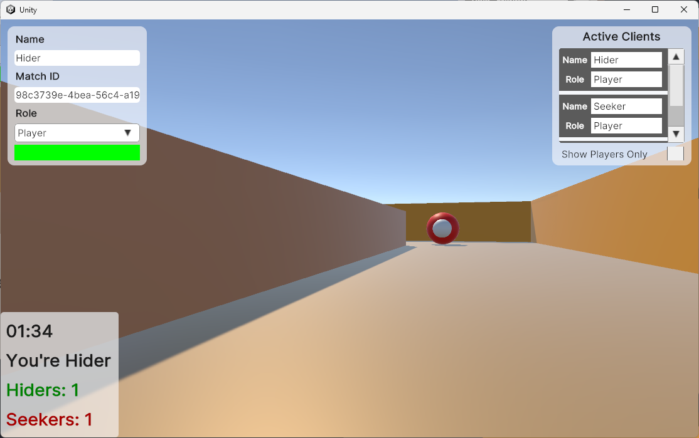
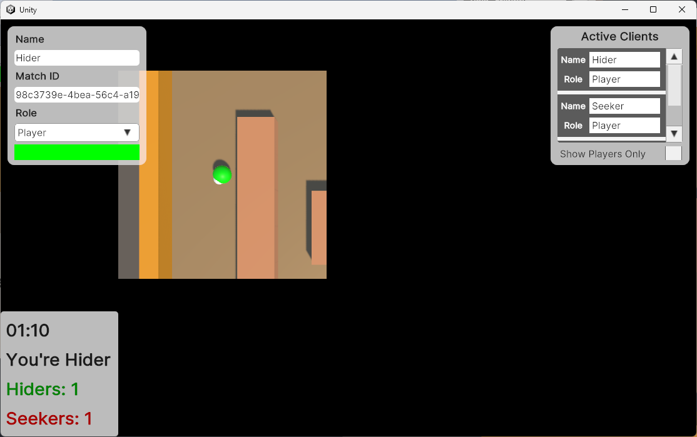
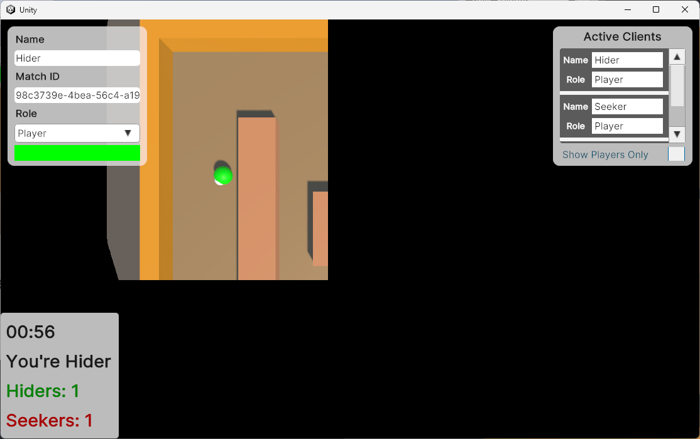

N v N Hide and Seek

A multiplayer version of Hide and Seek. The seekers' goal is to navigate through the maze and catch the hiders. The hiders' goal is to remain uncaught throughout the game.
Action Space
A 2-dimensional continuous action space:
NEXT_DESTINATION_X(0)NEXT_DESTINATION_Y(1)
Observation Space
Hide and Seek provides 3 possible camera views, all 128x128 size with bounding box:
First Person View
The first person view of the player.

Masked View
The top-down view with masked square area around the player.

Accumulative View
Similar top-down view with masked square area around the player, with the map view of player's visited area.

Unity Parameters
Game specific parameters:
| Parameter Name | Parameter Format | Description |
|---|---|---|
-NumHiders |
integer | Number of AI agents as Hiders |
-NumSeekers |
integer | Number of AI agents as Seekers |
-MoveSpeed |
float | Moving speed of the AI agent |
-RotationSpeed |
float | Rotation speed of the AI agent |
-EventChannelID |
string | Event side channel assigned by Algorithms |
-GameStopChannelID |
string | GameStop side channel assigned by Algorithms |
-DisableFirstCamera |
none | Flag to disable first person camera view |
-DisableMaskedCamera |
none | Flag to disable masked camera view |
-DisableAccumuCamera |
none | Flag to disable accumulative camera |
-MatchStartNumHiders |
integer | Overwrite the number of hiders required to start an episode |
-MatchStartNumSeekers |
integer | Overwrite the number of seekers required to start an episode |
-DecisionRequestFrequency |
float | Number of seconds between each two decision requests |
Universal parameters:
| Parameter Name | Parameter Format | Description |
|---|---|---|
-NakamaID |
string | Server ID assigned by Instance Server |
-DojoScreenSize |
intxint |
Set window size on launch |
-DojoScreenPos |
int,int |
Set window position on launch |
-DojoMonitorID |
integer | Set window monitor on launch |
-CaptureSizeW |
integer | Camera capture size (width) |
-CaptureSizeH |
integer | Camera capture size (height) |
-DojoRecording |
none | Flag to enable recording |
-DojoRecordingFile |
string | To overwrite recording log file path |
-DojoRecordingIdentity |
string | To overwrite recording log identity |
User interface controls:
| Action Name | Keyboard Mapping |
|---|---|
| Toggle UI | ESC |